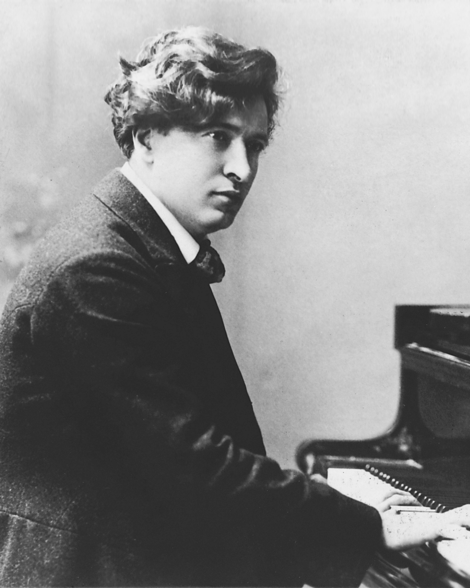
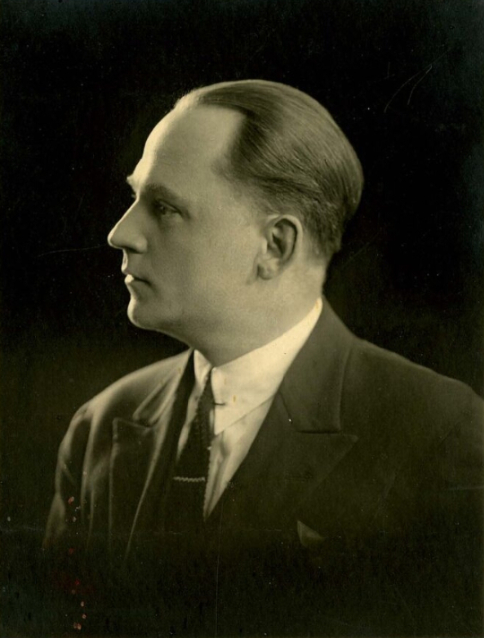
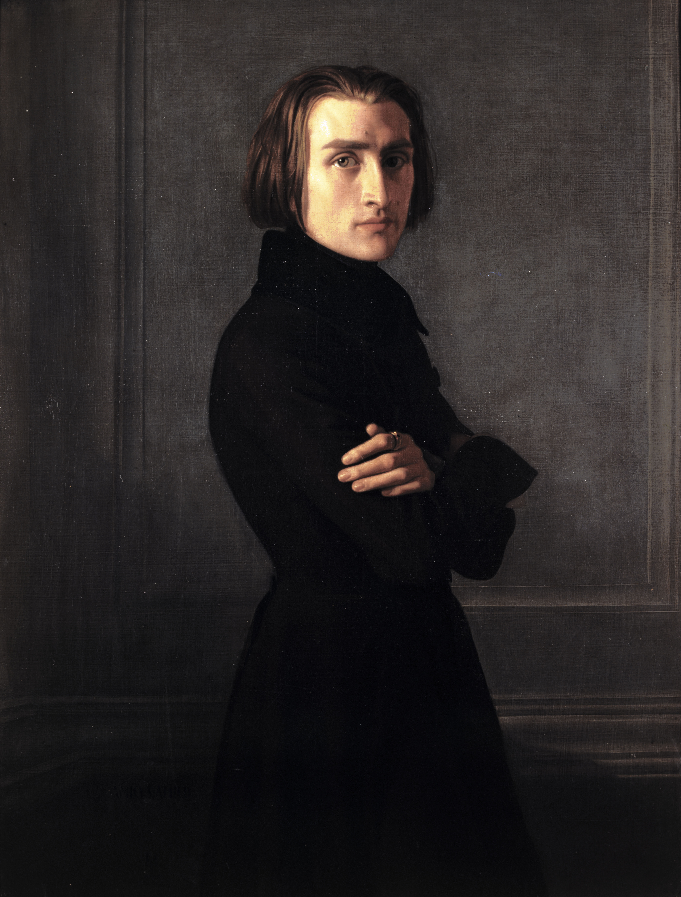

Conferenza Estate 2025
La Filosofia della Vita
Presentazione degli Studi Trascendentali di Franz Liszt
Introduzione
In preparazione dei concerti di questa estate dedicati agli Studi Trascendentali di Franz Liszt, siamo lieti di proporre un'ultima conferenza filosofico-letteraria volta ad esplorare il profondo significato di queste opere ed il loro fondamento spirituale, religioso e filosofico.
In questo incontro con il musicista Gregory Goureschidze, organizzato presso la Sala polifunzionale in Via Tomaso Da Rin a Laggio di Cadore in data 4 Luglio alle ore 20.45, si vuole completare il percorso iniziato insieme durante gli scorsi incontri per ricercare i valori dei grandi maestri tramite la spiegazione e la lettura di diversi testi.
Il maestro Gregory presenterà i 12 Studi Trascendentali attraverso la lettura di testi dell'autore stesso e di diversi Grandi Maestri che ne hanno riconosciuto ed apprezzato l'incredibile valore.
Come sarà esposto durante l'incontro, tramite queste opere Liszt riesce ad esprimere tutta la diversità della creazione ed i molteplici colori della vita. Per poter catturare la profonda essenza di queste opere è quindi fondamentale vivere in sé la religiosità di Liszt, senza la quale raggiungere l'idea autentica celata dietro questi grandi capolavori risulta impossibile.
Nei nostri tempi moderni la musica è vista esclusivamente come diletto e divertimento materialistico, sensibile e superficiale, nell'epoca antica essa era la via per apprendere l'ordine di tutte le cose, la scienza dei rapporti armonici dell'universo ed essa si basava su principi immutabili ai quali nulla può nuocere.
L'incontro offrirà importante occasione di dialogo, riflessione e meditazione per tutti coloro che desiderano aprire la loro anima alla vera Arte ed alla vera Filosofia.
Sullo stato d'animo e sul pianoforte
Voi non pensate certamente di aver toccato il mio punto sensibile. Non sapete che parlarmi di abbandonare il pianoforte significa farmi prevedere un giorno di tristezza: un giorno che ha avuto il potere di illuminare la prima parte della mia esistenza, ad esso inseparabilmente legata. Poiché, vedete, per me il pianoforte è come la nave per il marinaio, il corsiero per l'Arabo e forse ancora di più, perché il mio pianoforte, finora, sono io, la mia parola, la mia vita; esso è l'intimo depositario di tutto ciò che si è agitato nel mio cuore nei giorni più ardenti della mia giovinezza; in esso ho riposto tutti i miei desideri, i miei sogni, tutte le mie gioie e i miei dolori.
Le sue corde hanno vibrato sotto le mie passioni, i suoi tasti docili hanno obbedito a tutti i miei capricci, e voi, amico mio, vorreste che mi affrettassi ad abbandonarlo per correre dietro ai riconoscimenti più clamorosi del teatro e dell'orchestra? Oh! No.
Pur volendo ammettere ciò che senza dubbio voi pensate con troppa facilità, e cioè che io sia già maturo per un'attività del genere, è mia ferma volontà non abbandonare lo studio e gli sviluppi del pianoforte se non quando avrò fatto tutto quello che è possibile, o per lo meno tutto quello che mi è possibile fare oggi.
Lo sviluppo del pianoforte
Il pianoforte ha dunque, da una parte, questo potere di assimilazione, questa capacità di concentrare in sé la vita di tutti; dall'altra la sua propria vita, il suo accrescimento e il suo sviluppo individuale. Possiamo servirci dell'espressione originale d'un antico, microcosmo e microteo (piccolo mondo e piccolo dio). Considerandolo dal punto di vista del progresso individuale, il numero e il valore delle composizioni gli assicurano senza contrasto il primo posto. Ricerche storiche ci rivelerebbero, fin dalla sua origine, una successione ininterrotta non solo di esecutori celebri, ma anche di compositori eccelsi che si sono occupati di questo strumento preferendolo a qualsiasi altro.
Le opere per pianoforte di Mozart, Beethoven, Weber, non costituiscono i loro titoli di gloria meno significativi; esse formano una parte essenziale dell'eredità che ci hanno trasmesso. Questi maestri sono stati all'epoca loro pianisti insigni e non hanno mai tralasciato di scrivere per il loro strumento prediletto. Io non so se c'è meno passione in certi pezzi per pianoforte di Weber di quanta ve ne sia nell'Euriante e nel Freischütz; altrettanta scienza, profondità e poesia c'è nelle sonate di Beethoven che in molte delle sue sinfonie. Non vi meravigliate del fatto che io, loro umile discepolo, aspiri a seguirli, da lontano, ahimè!, e che il mio primo desiderio, la mia più cara ambizione sia quella di lasciare ai pianisti che verranno dopo di me qualche insegnamento utile, la traccia dei progressi ottenuti, un’opera, insomma, che sia degna testimonianza degli studi e degli sforzi costanti della mia giovinezza.
D'altra parte, bisogna che ve lo confessi, sono ancora molto vicino al tempo in cui mi facevano imparare a memoria i versi del buon La Fontaine, e mi sono sempre ricordato di quel cane troppo avido, che lasciò cadere l'osso succulento per correre dietro a un'immagine nel fiume, rischiando d'annegare. Lasciatemi rosicchiare in pace il mio osso; verrà anche troppo presto il giorno in cui potrò annegare forse nell'inseguire qualche immagine immensa e inafferrabile.
Ciò che si richiede al pianista
No, la tecnica non è e non sarà mai l'alfa e l'omega dell'arte pianistica, e nemmeno delle altre arti.
Tuttavia predico naturalmente ai miei scolari: Fatevi una tecnica e che sia ben basata. Per formare un grande artista si devono realizzare molteplici condizioni, e poichè ciò è dato solo a pochi, un vero genio costituisce una grande rarità.
Una tecnica perfetta in sè e per sè la troviamo in tante pianole ben costruite. Eppure un grande pianista dev'essere prima di tutto un forte tecnico, ma la tecnica, che è in fondo soltanto una parte dell'arte pianistica, non sta solo nelle dita e nelle articolazioni, o nella forza e nella resistenza. La più grande tecnica ha la sua sede nel cervello, essa si compone di geometria, valutazione delle distanze e ordine sapiente. Ma anche con ciò siamo appena al principio, perchè alla vera tecnica appartiene anche il tocco e soprattutto l'uso del pedale.
Al grande artista inoltre occorre una intelligenza non comune, cultura, una vasta educazione in tutte le discipline musicali e letterarie, e nelle questioni della vita. L'artista deve avere anche carattere. Se manca una di queste qualità, la lacuna si manifesta in ogni frase che egli eseguisce. Si aggiungono ancora sentimento, temperamento, fantasia, poesia e infine quel magnetismo personale che alle volte rende capaci di portare allo stesso stato d'animo quattromila persone estranee, riunite per caso. Inoltre si esige ancora presenza di spirito, dominio sulle proprie sensazioni in condizioni di ambiente irritanti, capacità di tenere desta l'attenzione del pubblico, e finalmente bisogna dimenticare il pubblico nei “momenti psicologici”.
Si deve aggiungere ancora il senso della forma, dello stile, la virtù del buon gusto e dell'originalità? Come mai si potrebbe finire se si volesse elencare tutto ciò che si può richiedere? Ma prima di tutto si tenga presente una qualità essenziale: Colui per la cui anima non è passata una vita, non dominerà mai il linguaggio dell’arte.


Riflessione su Liszt
La vita di Liszt mi è parsa offrire più d’un motivo di riflessione, in un’epoca in cui gli individui della sua tempra sembrano aver abbandonato la terra. Tuttavia, non è certo per inclinazione al romanticismo che l’ho scelta, ma piuttosto perché, immerso nel pieno del romanticismo, Liszt è un moderno. O meglio, uno di quei personaggi fuori dal tempo, senza eredità né discendenza, un isolato, come lo fu — pressappoco negli stessi anni — Benjamin Constant. In lui convivono il classico, il romantico, il nichilista e il cristiano. Prima di diventare sé stesso, egli è un crocevia di tutte le tendenze. Non rinnega nulla, né nessuno. Si nutre di ogni sostanza per forgiare la propria. E un bel giorno, diventa egli stesso una sorgente.
Sorgente non affatto limpida, d’argento, come sarebbero portati a credere coloro che conoscono la sua opera solo attraverso il ristretto numero di brani eternamente ripetuti in tutti i concerti. Ma sorgente gravida, nelle sue stagioni, di tutti i sali della sconfitta. Liszt ha qualcosa di esemplare: pur avendo conosciuto giovanissimo i più rari trionfi d’artista e le più pericolose gioie d’uomo, si è lentamente elevato — con la sola forza della volontà, e malgrado quella gloria che insabbia — fino alle solitudini dello spirito. Egli inseguiva ciò che, ai suoi tempi, si chiamava un “ideale”, cosa ben diversa da quei successi che ciascuno di noi oggi vuole raggiungere a colpi di gomito, quando non proprio a calci. Il suo ideale era un modo d’essere, un modo di servire. L’arte era per lui un sacerdozio, e nulla anteponeva agli entusiasmi della sua fede. Servire, amare: queste erano le insegne della sua anima candida. Credeva nell’arte, nel suo pianoforte, in Wagner e in Dio. Avverto bene tutto il ridicolo di questo vecchio chierichetto; ma a forza di vederlo officiare la sua messa, sono finito per diventare un po’ suo chierichetto anch’io. Vivendo accanto al suo personaggio, si finiscono per prenderne i tic e il vocabolario.
Liszt è mio amico da molti anni. L’ho conosciuto dapprima attraverso la sua musica, che si eseguiva spesso in Germania ai tempi in cui vi soggiornavo. Questo essere di "fiamma e cristallo", come una donna lo definì una volta davanti a me, mi attirava irresistibilmente. L’ho conosciuto anche attraverso le sue biografie, e per mezzo di alcuni suoi vecchi allievi. Le testimonianze dirette, sempre concordi quando si trattava di evocare le generosità di quel cuore fuori dal comune, cominciavano a divergere non appena le mie domande toccavano l’arte, la vita o le passioni dell’uomo. Presi qualche appunto. Mi procurai i suoi scritti letterari, la sua voluminosa corrispondenza.
Mi recai a Bayreuth per incontrare la sua discendenza tedesca. Madame Wagner, sua figlia, mi accolse, nonostante la veneranda età, e mi parlò di suo padre con quell’intensità che solo lei possedeva. Le sue nipoti mi mostrarono lettere, ritratti, e mi raccontarono la bella storia del vecchio poeta che celebrava Dio e “l’eterno femminino”. Mi spinsi fino a Roma, che lo aveva visto vestire l’abito talare. Visitai i due conventi nei quali compose tanta musica sacra, per la delizia di un Papa che amava venire a sedersi accanto al suo armonium. Andai a Tivoli, a passeggiare nei giardini di Villa d’Este.
Conoscete quella fortezza della solitudine, sospesa fra cipressi e cascate? Liszt vi abitava il cielo, tra le campane.
Infine, tornai a Bayreuth, ascoltai il Parsifal e mi recai sulla tomba del “Minimo”, morto in un giorno in cui si rappresentava la storia di Tristano e Isotta.
Il mio metodo di lavoro non è stato altro che seguire Liszt passo dopo passo, fin dall’infanzia, attraverso le sue lettere, le sue avventure e i suoi viaggi. Il clamore della sua gloria di pianista risuona in tutti i giornali del tempo. La storia del suo spirito è nelle sue opere. Quella dei suoi amori si legge nelle sofferenze e negli entusiasmi delle donne che l’hanno adorato.
Raccogliendo questi documenti, districandoli nodo per nodo, senza mai tentare un ritratto eroico, ma lasciandogli i suoi chiaroscuri, ho visto delinearsi da sé il potente volto di quest’angelo incatenato.
Aforismi di Liszt
Non voglio sentire come riesci a suonare le ottave velocemente. Ciò che voglio sentire è il galoppo dei cavalli della cavalleria polacca prima che radunino le loro forze e distruggano il nemico. [A proposito della Polacca op. 53]
Il programma rivendica soltanto la possibilità di precisare l'emozione che penetrava il musicista-poeta mentre creava la sua opera, il pensiero al quale egli dava, in essa, una forma materiale.
Le grandi opere vogliono essere abbracciate interamente, corpo e anima, forma e pensiero, spirito e vita.
Wagner è davvero troppo poeta per voler mettere nei suoi drammi la Filosofia in azione.
È poeta; il che significa che obbedisce all’Ispirazione, e questa non smetterà mai di impadronirsi dello Spirito che visita, come un tempo il soffio di Apollo si impossessava della Pizia per far parlare, attraverso la sua bocca, l’Oracolo del Tempio.
Coloro che non sono mai stati colti da questo trasporto, che una lingua slava esprime così profondamente rendendo la parola Poeta sinonimo di Profeta, possono sforzarsi di creare poemi a tesi, poemi che vogliono dimostrare; ma farebbero meglio a limitarsi alla polemica.
Se si scoprisse che tutte le prove metafisiche, a sostegno dell'esistenza di Dio, sono ridotti a nulla dagli argomenti della filosofia, ne rimarrebbe sempre uno assolutamente invincibile.
L'affermazione di Dio nel nostro gemito, nel bisogno che abbiamo di Lui, nell'aspirazione delle nostre anime al suo amore, questo è sufficiente per me, e non chiedo altro per restare credente fino all'ultimo soffio della mia vita.
Ieri sera ho ricevuto la tua ultima lettera e rispondo subito alla questione del mio testamento.
Vi esprimo il mio desiderio di essere rivestito, nella bara, dell'abito dell’Ordine Terziario di San Francesco. È il mio ultimo omaggio al grande santo, che proseguì il suo apostolato come "folle" della Croce – e finì per ottenere un giorno dal papa il gran perdono, solennizzato dalla Chiesa.
Al momento della mia morte, raccomanderò a chi si troverà accanto a me di preoccuparsi di coprire la mia triste salma con questo abito di San Francesco. Chiederò anche che si faccia in modo di evitarmi gli onori di un funerale sontuoso.
Se possibile, che si mi conduca, in maniera discreta, la sera, alla mia ultima dimora – basteranno due o tre uomini pagati per portarmi. Non vorrei disturbare altri a seguirmi al cimitero – dove non potrò più essere loro utile in nulla!
Aforismi di Liszt - Sul Lavoro
Sono quindici giorni che la mia mente e le mie dita lavorano come due dannati – Omero, la Bibbia, Platone, Locke, Byron, Hugo, Lamartine, Chateaubriand, Beethoven, Bach, Hummel, Mozart, Weber, sono tutti intorno a me. Li studio, li medito, li divoro con furia; inoltre faccio 4 o 5 ore di esercizi (terze, seste, gravi, trilli, note ripetute, cadenze, ecc., ecc.).
Ah! purché non diventi pazzo – ritroverai in me un artista!
Sì, un artista, come tu lo desideri, come oggi è necessario!
“Anch’io sono pittore”, esclamò Michelangelo la prima volta che vide un capolavoro... e, benché piccolo e povero, il tuo amico non smette di ripetere queste parole del grande uomo sin dall’ultima esibizione di Paganini!
Sì, caro Figlio, da quando Dio ha imposto il lavoro all’uomo, è attraverso il lavoro che egli compie la duplice legge della sua espiazione e della sua riabilitazione.
Lavorare su se stessi e sugli altri, lavorare per appropriarsi delle conoscenze acquisite, lavorare per accrescerle, estenderle, farle fruttare: tale è la nostra destinazione su questa terra.
Conoscete i miei principi riguardo alla pubblicità: mai fare réclame, mai arrabbiarsi, ricevere la pioggia e la grandine con la stessa indifferenza — ma lavorare, fare la critica delle proprie opere producendo sempre di migliori, essere giusti con gli altri anche quando sono ingiusti con noi — e, talvolta, come dessert (ma di rado), prendersi leggermente gioco degli sciocchi — che vogliono darsi importanza.
Aforismi di Liszt - Sul Pianoforte
Il pianoforte è il microcosmo della musica.
Il pianoforte ha dunque, da un lato, questa potenza assimilatrice, questa vita di tutto ciò che in esso è concentrato; e, dall'altro, la sua stessa vita, la sua crescita e il suo sviluppo individuale. Per usare l'espressione originale di un antico, si tratta allo stesso tempo di microcosmo e microtea (piccolo mondo e piccolo dio).
Forse questo tipo di sentimento misterioso che mi lega al pianoforte mi illude; ma ritengo che la sua importanza sia molto grande: occupa, ai miei occhi, il primo posto nella gerarchia degli strumenti; egli è il più colto di tutti, il più loquace, questa importanza e questa popolarità deve in parte alla potenza armonica che possiede esclusivamente; e, in virtù di questa, ha la facoltà di riassumere e concentrare in sé tutta l’arte.
Nello spazio delle sue sette ottave, abbraccia l'estensione di un'orchestra; e le dieci dita di un solo uomo sono sufficienti a riprodurre le armonie prodotte dalla collaborazione di più di cento concertisti. È attraverso di lui che vengono diffuse opere che, a causa della difficoltà di formare un'orchestra, rimarrebbero altrimenti ignorate o poco note al grande pubblico.
È quindi per la composizione orchestrale ciò che l'incisione è per la pittura; la moltiplica, la trasmette a tutti e se non rende il colore, rende almeno le luci e le ombre.
Attraverso lo sviluppo indefinito della sua potenza armonica, il pianoforte tende sempre più ad assimilare tutte le composizioni orchestrali. Nello spazio delle sue sette ottave, può produrre, salvo poche eccezioni, tutti i tratti, tutte le combinazioni, tutte le figure della composizione più dotta, e non lascia all'orchestra altre superiorità (immense è vero) che quelle della diversità dei timbri e degli effetti di massa.
Anche i pessimi cantanti possono trovare buoni ingaggi, perché i teatri sono una necessità ovunque: i pianisti sono un'altra cosa! Novantanove su cento sono quantomeno superflui, se non fastidiosi.
Uno dei loro rivali più arguti mi ha detto ieri: "Ci vorrebbe un massacro nel giorno di San Bartolomeo.”
Il fatto è, credo di poterlo dire in buona coscienza e con piena modestia, che tra i compositori che mi sono noti non ve n'è alcuno che abbia un sentimento della Musica religiosa tanto intenso e profondo quanto il vostro umilissimo servitore. Inoltre, i miei antichi e nuovi studi su Palestrina, Lassus – fino a Bach e Beethoven, che sono le vette dell’arte cattolica – mi forniscono un grande sostegno, e ho piena fiducia che tra tre o quattro anni avrò preso pieno possesso del dominio spirituale della musica sacra, che da una ventina d’anni è occupato solo da mediocrità a dozzine, le quali, in verità, non mancheranno di rimproverarmi di non fare Musica religiosa – il che sarebbe vero, se le loro opere di paccottiglia e di orpello potessero davvero essere considerate tali. Qui, come altrove, si tratta di “risalire alle fondamenta”, come dice Lacordaire, e di “penetrare fino a quelle sorgenti vive che zampillano fino alla vita eterna”.
Aforismi di Liszt - Sull'Interpretazione
Suonate le mie opere orchestralmente.
La tecnica deve venire dall’anima, non dalla meccanica!
In tutto ciò che faccio, credo di avere qualcosa di completamente nuovo da dire. È quindi essenziale che voi assimiliate il mio pensiero ed il mio sentimento, per non tradirli con un'esecuzione rovinosa.
L'esecuzione metronomica è faticosa, fastidiosa e inopportuna; la misura e il ritmo devono venire ed essere identificati dalla melodia, dall'armonia, dall'accento e dalla poesia…
Non suono a tempo. La misura è in senso musicale, come il ritmo è nei versi, e non nel modo pesante e cadenzato in cui si vorrebbe gravare sulla cesura. La musica non deve avere un andamento uniforme, ma deve essere animata e rallentata con spirito e in base al significato che contiene.
Ciò deve accadere soprattutto per la musica contemporanea, che è tutta romantica, mentre i classici vengono eseguiti più regolarmente.
Non formulare battuta per battuta; questo interrompe l'espressione; in genere si dovrebbero raccogliere quattro o più battute in una frase; in questo modo otteniamo linee larghe.
Guardate questi alberi: il vento gioca tra le foglie, dà loro vita, ma l'albero rimane lo stesso. Questo è il rubato di Chopin!
Non posso dimostrarvelo, deve essere il vostro senso espressivo a ispirarvi; Questo non può esservi dimostrato da un "professore", cosa che sicuramente non sono!
Vedete che per esprimere tutto ciò che si sente, non bisogna lasciarsi ostacolare da nulla, bisogna avere delle dita così sviluppate, così flessibili, con una tale gamma di sfumature pronte nelle dita, che il cuore possa muoversi e progredire senza che le dita siano mai un ostacolo.
Sii individuale, non imitare e non giocare con te stesso; Meglio un pessimo progetto originale che una buona interpretazione imitata pedissequamente.
Da parte mia sono molto stanco di insegnare ciò che in realtà non si può imparare: è proprio questo che conta soprattutto nella Musica.
Non ci sono professori in arte, soltanto artisti e non artisti.
Aforismi di Liszt - Sull'Ideale
Nessuno più di me avverte la sproporzione tra la buona volontà e il risultato effettivo nelle mie composizioni musicali. Eppure continuo a scrivere, non senza fatica, per un intimo bisogno e per vecchia abitudine. Mirare in alto non è vietato. Si tratterebbe soltanto di riuscire a raggiungere la meta.
All’impossibile nessuno è tenuto. Riprodurre l’orchestra sul pianoforte non è ancora concesso a nessuno; e tuttavia, bisogna sempre tendere verso l’ideale, attraverso tutte le forme, più o meno ostili e inadeguate. La vita e l’arte non valgono, a mio avviso, che per questo.
In fondo, non valgo più a nient’altro se non a proseguire con fermezza il cammino del mio lavoro, senza altro scopo che quello di manifestare, nel modo meno imperfetto possibile, un Ideale ben saldo nel mio spirito — e, facendo ciò, amare le poche anime che mi amano, dimenticando del tutto coloro che si affannano a fare il contrario.
A sproposito e a vanvera si discute sull’Ideale!
Io non ne conosco uno più alto di quello del sacerdote che medita, pratica e insegna le tre virtù teologali: Fede, Speranza e Carità — fino al sacrificio volontario della propria vita, coronato dal martirio, quando Dio lo concede!
Tutto è effimero, solo la parola di Dio è eterna, tuttavia, la parola di Dio si rivela nelle creazioni del Genio.
Articolo primo - Franz Liszt
"Tutto è stato detto, e siamo arrivati troppo tardi, perché da più di settemila anni ci sono uomini, e uomini che pensano", ha affermato La Bruyère.
Mi permetto tuttavia di osservare che, anche ammettendo in una certa astratta generalità che tutto sia stato detto, non siamo in alcun modo autorizzati a concludere da ciò che tutto sia stato ascoltato e compreso.
Quanti documenti, quanti tesori ammucchiati silenziosamente, dormono per sempre immobili nelle nostre biblioteche, questi abissi di intelligenza!... Quante opere e fatiche ignorate o mal comprese! Quante altre sono sparse qua e là, inaccessibili al grande pubblico e che avrebbero bisogno di essere classificate, ordinate e rinnovate dalla pubblicità!
Quale deplorevole ignoranza, quali presunzioni infantili, quali intollerabili incertezze nei nostri salotti, nelle nostre conversazioni e nei nostri giornali!... Sì, certamente.
Anche se tutto è stato detto, tutto deve essere ripetuto ancora. In politica, come nella filosofia e nelle belle arti, le nozioni più semplici sono ancora appena sospettate dalla massa; le verità più grandi passano e ripassano sempre inosservate agli intelligenti e ai dotti.
Articolo secondo - Franz Liszt
A forza di dividere, delimitare, categorizzare (cose utili e necessarie senza dubbio), a forza di perseguire anche solo parziali miglioramenti e di spingere quasi all'eccesso la perfezione dei dettagli, ci siamo lasciati cadere in un'inconcepibile dimenticanza dei rapporti originari e le leggi primordiali sono state come cancellate dalla nostra comprensione.
Per molti secoli, politica, arte e scienza sono state considerate radicalmente opposte, se non addirittura nemiche. I rappresentanti di queste tre grandi potenze sociali si separarono. Nel loro colto e superbo egocentrismo, studiosi e artisti sentivano poco il bisogno di interrogarsi a vicenda. Tutti erano contenti di arare il proprio campo e di raccogliere il raccolto. I politici, da parte loro, ostentavano lo stesso disprezzo per il matematico e il poeta, per l'ideologo e il musicista; non sapevano che farsene di tutti questi sognatori parassiti!... E così, divisi da opinioni, interessi e credenze, evitandosi a vicenda, soffocando i bisogni comuni che avrebbero dovuto unire tutto, riconciliare tutto, il legame universale fu spezzato, fu distrutto - nello stesso momento in cui fu invalidato lo sviluppo naturale di ogni parte nel tutto - la grande vita armonica dell'immenso Tutto fu distrutta.
È soprattutto considerando la musica nella sua origine e nei suoi successivi destini che abbiamo acquisito la convinzione di questa verità. Nessuna arte, nessuna scienza (tranne la filosofia) ha il diritto di rivendicare un passato così glorioso, una sintesi così antica e magnifica. Se torniamo ai tempi primitivi, vediamo gli uomini più illustri, i filosofi e i legislatori più venerabili, inginocchiati davanti alla sua culla. Egiziani, cinesi, persiani, greci, tutti i popoli, tutti i saggi dell'antichità sono unanimi nel proclamare le meraviglie e la sovranità della musica.
Quale sentimento, quale ammirevole comprensione dell'arte in questi pochi frammenti che ci sono stati tramandati dagli antichi! Quale potente influenza ha avuto la musica sulla società! Quale significato vasto e sublime davano a questa parola! Nessuno ignora infatti che sotto il nome di musica non si comprendevano solo la danza, il gesto, la poesia, ma perfino l'insieme di tutte le scienze. Hermes definisce la musica come la conoscenza dell'ordine di tutte le cose. Questa era anche la dottrina della scuola di Pitagora e di quella di Platone, che insegnavano che tutto nell'universo era musica.
Secondo Esichio, gli Ateniesi chiamavano musica tutte le arti [...]. Da qui tutta questa musica sublime di cui ci parlano i filosofi, musica divina, musica degli uomini, musica celeste, musica terrestre, musica attiva, musica contemplativa, musica enunciativa, intellettiva, oratoria... Per queste razze forti, la musica era il legame supremo, il linguaggio degli dei, la scienza per eccellenza la cui missione era preservare e trasmettere ogni verità così come ogni saggezza.
Limitiamoci a constatare nella sua generalità la sua immensa e molteplice influenza sulle società antiche; Poniamo come un dato di fatto accertato e indiscusso il suo potere politico, filosofico, sociale e religioso, al tempo del paganesimo, e poi chiediamoci come sia potuto accadere che, mentre l'arte cresceva e cresceva ancora grazie agli sforzi incredibili e alla dedizione degli artisti, la musica e i musicisti perdessero ogni autorità, ogni consapevolezza della loro missione?
Come mai, nel produrre, nel dare alla luce con fatica questa moltitudine di capolavori e miracoli, hanno quasi annientato se stessi socialmente? Come mai, infine, tanti uomini eminenti non si sono scrollati di dosso con violenza il giogo di una deplorevole inferiorità, e per quale fatalità coloro che erano stati i primi si sono degnati di diventare gli ultimi?
La risposta a queste serie domande sarebbe lunga e triste. Forse mi azzarderò altrove, anche se è probabile che scandalizzerò diversi aristarchi seriali che sono essi stessi una prova vivente della maestosità dell'arte; ma oggi mi sento in dovere di approfondire più direttamente l'argomento di questo articolo.
Il nome musicista viene dato anche a chi compone la musica e a chi la esegue. [...] Gli antichi musicisti erano poeti, filosofi, oratori di prim'ordine. Tali erano Orfeo, Tespander, Stesichorus. Boezio non vuole onorare col nome di musicista colui che esercita la musica solo col servile ministero delle dita e della voce, ma colui che possiede questa scienza mediante il ragionamento e la speculazione. E sembra inoltre che per giungere alle grandi espressioni della musica oratoria e imitativa, si sarebbe dovuto studiare in modo particolare le passioni umane e il linguaggio della natura.
Tuttavia, i musicisti odierni, formatisi per la maggior parte sulla pratica delle note e su qualche brano musicale, non si offenderanno, credo, se non saranno considerati grandi filosofi.
Tuttavia, a questo proposito, e senza rischiare qui la definizione filosofica e oratoria del musicista, divideremo, secondo Jean-Jacques e come tutti gli altri, gli artisti in tre classi:
-Gli esecutori.
-I compositori.
-Gli insegnanti.
Rousseau, è vero, non fa menzione di quest'ultimo; ma evidentemente ai suoi tempi non esistevano ancora molti individui che non sapessero né suonare né comporre, e che si accontentassero di aiutare il progresso dell'arte in modo indiretto: vale a dire intascando quanti più compensi possibile. Sembrerebbe anche che la critica musicale, per sua estensione, avrebbe dovuto costituire una quarta classe di musicisti, superiore alle altre; ma poiché finora i nostri dottori e giudici (ad eccezione di pochi uomini onorevoli e istruiti) non si sono degnati di imparare molto oltre le sette note della scala, eviterei di apparire scortese nei loro confronti confondendoli sotto la volgare denominazione di musicisti. È ovvio che questi signori aspirano a qualcosa di più elevato!
Ci limiteremo quindi a queste tre divisioni di musicisti: esecutori, compositori e insegnanti, lasciando al pubblico il compito di classificarli in base al talento, in grandi e piccoli, classici e romantici, invalidi e imberbi, volgari e sublimi, ecc. ecc. e in termini morali, in artisti e artigiani.
Non è necessario definire questi due termini. L'iniziativa morale, la manifestazione del progresso umanitario, a costo dei sacrifici e delle devozioni più dolorose, esposti alle persecuzioni del ridicolo e dell'invidia, tale è sempre stata la sorte dei veri artisti.
Per quanto riguarda coloro che chiamiamo artigiani, non c'è motivo di preoccuparsi molto. Il piccolo traffico quotidiano, le piccole soddisfazioni dell'autostima e delle cricche sono più che sufficienti per le loro importanti personalità. Si esprimono, guadagnano soldi e si promuovono.
Sull’insegnamento e sulla critica
Queste due cose si equivalgono; sono quasi ugualmente errate, incomplete, routinarie, o sciocche e ridicole.
La dignità e i laboriosi doveri dell’insegnamento e della critica (che non è altro che un insegnamento generale) sono compresi solo da pochissimi. La maggior parte dei maestri e dei critici di professione si cura ben poco di ciò che fa o di ciò che dice. Che importa loro l’arte, il suo progresso, la sua espansione sociale? Queste parole suonano male alle loro orecchie. Vorrebbero quasi cancellarle dal vocabolario. Prima di tutto, sono uomini di mestiere e di mercanzia.
E nel qualificarli con tale titolo, crediamo di concedere loro più di quanto meritino, poiché, per esercitare un mestiere – per fare il falegname, il fornaio, il tintore – è necessario un previo apprendistato, mentre questi signori si guardano bene, il più delle volte, dal prendere simile precauzione. Un buon terzo di loro conosce a malapena le note e le chiavi musicali: eppure non sono certo i meno influenti. Non vi venga in mente di chiedere agli altri se abbiano mai pensato seriamente di occuparsi della storia o della filosofia della musica, se si prendano la briga di studiare i migliori autori, di esaminare e confrontare i metodi di insegnamento, le partiture, le composizioni rilevanti, eccetera, eccetera: tanto varrebbe chiedere loro notizie sugli abitanti della Luna.
“A che pro”, vi risponderebbero, “affaticarsi la mente con tutte queste cose vaghe e contraddittorie? Non abbiamo bisogno di scienza per insegnare, né di criteri per criticare; facciamo critica e professiamo. Non basta forse avere orecchie per giudicare, e mancare di denaro per insegnare?”.
Così, il primo pedante che capita si autodefinisce professore, con lo stesso diritto alla verità di tanti cacciatori di pagnotta e di acchiappasoldi suoi onorevoli colleghi. Alcuni di questi artisti cumulano gli onorari dell’insegnamento con quelli del giornalismo.
Nondimeno, il feuilleton recluta con più abilità in questa popolazione di inettitudini specializzate, di eunuchi invidiosi o oziosi, con guanti gialli o sporchi, che possiedono eleganti tilbury o battono impudentemente il marciapiede: una popolazione di grande importanza, giudice sovrano del bello e del brutto, del successo e della rovina, che si può contemplare con ammirazione mentre passeggia – come il gran re – nel foyer dei Bouffes o dell’Opéra.
Non è forse pietoso vedere una bella opera esposta agli sbadigli inetti, alle osservazioni facete e taglienti di questi individui, i quali il giorno dopo offriranno al pubblico la loro ignoranza e la loro stolta parzialità?
Senza dubbio, vi sono uomini di grande valore che insegnano e scrivono; ma oltre al fatto che sono estremamente rari, sono proprio loro che potremmo chiamare a testimone. Più di noi stessi, essi sono convinti e afflitti dal vuoto, dalle assurdità e dagli abusi dell’insegnamento e della critica nello stato in cui oggi si trovano.
Senza dubbio, anche, per porvi rimedio (almeno in parte), sarebbe necessario che nessuno potesse arrogarsi il diritto di insegnare o di esercitare pubblicamente la funzione di critico senza aver sostenuto un esame preliminare e ottenuto un diploma.
Ma non oso più dir nulla, né proporre alcunché in merito, per timore di rompere del tutto con alcuni onorati colleghi e attirare su di me le vendette implacabili della criticheria e del feuilletonismo.
Sulla musica religiosa
E della musica religiosa, infine?
La musica religiosa!... Ma non sappiamo più cosa sia.
Le grandi concezioni di questo genere – quelle dei Palestrina, dei Händel, dei Marcello, dei Haydn, dei Mozart – non hanno ormai che un'esistenza da archivio. Mai questi capolavori sollevano la polvere che li ricopre; mai il loro Verbo si fa carne, per colpire con terrore e meraviglia, o per incantare religiosamente la folla prostrata davanti al Santo dei Santi.
Non è che vengano dimenticati o disprezzati. No: la ragione del loro silenzio è più grave, più profonda.
Non sappiamo più cosa sia, veramente, la musica religiosa. E come potrebbe essere altrimenti?...
Il potere spirituale del Medioevo – quel potere un tempo tanto grandioso e spesso così benefico al culmine del suo splendore – è ora simile a una canna spezzata, a uno stoppino fumante che non dà più luce. Non ha più in sé la forza di mettere radici vigorose nella terra, né quella di illuminare il cielo e il mondo con miracolose e fiammeggianti spighe d’oro. Da tempo ha perso la guida del movimento sociale.
La Chiesa cattolica – tutta intenta a balbettare la propria lettera morta, a prolungare nella comodità la propria avvilente decadenza, incapace che di escludere e di lanciare anatemi là dove si dovrebbe benedire e incoraggiare – priva del senso dei profondi bisogni che agitano le nuove generazioni, incapace di comprendere la scienza e l’arte, priva di tutto, impotente a offrire alcunché per placare questa fame e sete di giustizia, di libertà e di carità che ci tormenta… questa Chiesa cattolica, così come si è fatta, così com’è oggi, schiaffeggiata sulle due guance insieme dai re e dai popoli – nei vestiboli del potere come sulle piazze –, questa Chiesa, diciamolo senza reticenze, si è completamente alienata il rispetto e l’amore della società presente. Il popolo, l’arte, la vita stessa si sono ritirati da lei; e sembra che il suo destino sia quello di perire nel disprezzo e nell’abbandono.
Gli dei se ne vanno, i re se ne vanno, ma Dio resta e i popoli sorgono. Non disperiamo dunque dell’arte. Vogliamo parlare di una rigenerazione della musica religiosa.
Benché con questo termine si indichi comunemente la musica eseguita in chiesa durante le cerimonie del culto, io lo prendo qui nella sua accezione più ampia. Nel tempo in cui il culto esprimeva e soddisfaceva insieme le credenze, i bisogni e le simpatie dei popoli, quando uomini e donne cercavano e trovavano nella chiesa un altare su cui inginocchiarsi, un pulpito da cui nutrire la mente e uno spettacolo che ricreava ed esaltava santamente i sensi, la musica religiosa poteva restare rinchiusa entro il sacro recinto e bastava che accompagnasse le magnificenze della liturgia cattolica.
Oggi, in un’epoca in cui l’altare scricchiola e vacilla, in cui il pulpito e le cerimonie religiose sono divenute materia di dubbio e di scherno, è necessario che l’arte esca dal tempio, si espanda e compia all’esterno le sue ampie evoluzioni. Come un tempo – e più ancora – la musica deve interrogare il popolo e Dio; andare dall’uno all’altro; elevare, moralizzare, consolare l’uomo; benedire e glorificare Dio.
Per compiere ciò, la creazione di una musica nuova è imminente, una musica essenzialmente religiosa, potente e operante, che, in mancanza di altro nome, chiameremo umanitaria: essa riassumerà in proporzioni colossali il Teatro e la Chiesa. Sarà al tempo stesso drammatica e sacra, fastosa e semplice, patetica e solenne, ardente e sfrenata, tempestosa e pacata, serena e tenera.
Opinioni di Grandi Maestri su Franz Liszt
Liszt ha creato il poema sinfonico. Questa creazione brillante e feconda sarà per la posterità il suo più bel titolo di gloria e, quando il tempo avrà cancellato la traccia luminosa del più grande pianista che sia mai esistito, scriverà nel suo libro d’oro il nome dell’emancipatore della musica strumentale.
Quest’uomo meraviglioso non può far nulla senza rivelarsi, senza donarsi interamente; mai si limita a riprodurre; per lui non esiste attività possibile che non sia creazione; tutto in lui tende alla creazione pura, assoluta.
Quando volgo lo sguardo all’attività che hai dispiegato in questi ultimi anni, mi sembri una creatura del tutto sovrumana; dev’esserci davvero una causa straordinaria dietro a tutto ciò. Eppure, è perfettamente naturale che non troviamo più gioia se non nel creare, e che persino la vita stessa ci sia sopportabile solo nella misura in cui produciamo. In verità, noi non siamo, alla fine, che ciò che siamo nel nostro atto di creare; tutte le altre funzioni vitali non hanno senso per noi — non sono altro, in fondo, che concessioni fatte alla banalità della comune esistenza umana, concessioni che ci lasciano sempre un senso di disagio.
"Dio vi scampi dal toccare la vostra sinfonia!" protesta Liszt. "Le vostre modulazioni non sono né eccessive né errate. Avete osato molto, è vero — ed è proprio questo il vostro merito. Non date ascolto a chi vorrebbe trattenervi; credetemi, siete sulla via giusta. Il vostro istinto artistico è tale da non dover temere l’originalità. Ricordate che gli stessi ammonimenti furono rivolti, ai loro tempi, a Beethoven, a Mozart, e ad altri. Se li avessero seguiti, non sarebbero mai diventati dei maestri..."
"Conoscete bene la Germania — là si scrive molto. Io stesso sono sommerso in un oceano di musica che mi travolge; ma, Dio mio, quanto tutto ciò è piatto, senz’anima, privo di un’idea viva. In voi, invece, sento scorrere una corrente vitale. Prima o poi — probabilmente più tardi che presto — questa corrente troverà il suo corso anche qui. Vi rimprovera di non pubblicare le vostre partiture e vi loda per non aver frequentato alcun conservatorio. Proprio come me, del resto, benché io stesso ne diriga uno!"
"Ma anche se le vostre opere non venissero né eseguite né pubblicate, anche se non ricevessero successo immediato, credetemi: si faranno strada con onore. Possedete un talento originale; non date retta a nessuno, e lavorate alla vostra maniera."
Quando venne il turno di Liszt, scrive Borodine alla moglie, egli si spinse fino in fondo al coro, e presto la sua chioma grigia emerse dietro lo strumento. I suoni pieni e vibranti del pianoforte si diffondevano come onde sotto le volte gotiche del vecchio tempio. Era divino. Che sonorità, che potenza, che pienezza! E che pianissimo, che morendo! Eravamo rapiti.
Quando giunse la Marcia funebre di Chopin, apparve evidente che il pezzo non era stato arrangiato: Liszt improvvisava al pianoforte, mentre l’organo e il violoncello eseguivano le parti scritte. Ogni volta che il tema tornava, prendeva una nuova forma — ed è difficile immaginare cosa riuscisse a farne. L’organo trascinava pianissimo gli accordi in terze della linea di basso. Il pianoforte, con il pedale, intonava pianissimo gli accordi pieni. Il violoncello cantava il tema. Sembrava il suono remoto delle campane a morto, che ancora rintoccano, mentre la vibrazione precedente non si è del tutto spenta. Mai, in nessun luogo, ho udito nulla di simile.
A Franz Liszt,
Cos'è un tirso? In senso morale e poetico, si tratta di un emblema sacerdotale tenuto in mano da sacerdoti o sacerdotesse che celebrano la divinità di cui sono interpreti e servitori. Ma fisicamente è solo un bastone, un bastone puro, un palo di luppolo, un palo di vite, secco, duro e dritto. Attorno a questo bastone, in meandri capricciosi, giocano e si aggirano steli e fiori, alcuni sinuosi e fugaci, altri inclinati come campanelli o tazze rovesciate. E da questa complessità di linee e colori, teneri o vivaci, scaturisce una gloria sorprendente. Non sembra forse che la linea curva e la spirale corteggino la linea retta e le danzino attorno in silenziosa adorazione? Non sembrerebbe che tutte queste delicate corolle, tutti questi calici, esplosioni di profumi e colori, stiano eseguendo un fandango mistico attorno al bastone ieratico? E tuttavia chi è l'imprudente mortale che oserà decidere se i fiori e le viti sono stati fatti per il bastone, o se il bastone è solo il pretesto per mostrare la bellezza delle viti e dei fiori?
Il tirso è la rappresentazione della tua sorprendente dualità, potente e venerato maestro, cara Baccante dalla Bellezza misteriosa e passionale. Mai una ninfa, esasperata dall'invincibile Bacco, scosse il suo tirso sulle teste delle sue compagne in preda al panico con altrettanta energia e capriccio con cui tu scuoti il tuo genio sui cuori dei tuoi fratelli. — Il bastone è la tua volontà, dritta, ferma e incrollabile; i fiori sono la passeggiata della tua fantasia attorno alla tua volontà; è l'elemento femminile che compie le sue prestigiose piroette attorno al maschile. Linea retta e linea arabesca, intenzione ed espressione, rigidità della volontà, sinuosità della parola, unità di intenti, varietà di mezzi, amalgama onnipotente e indivisibile del genio, quale analista avrà il detestabile coraggio di dividervi e separarvi?
Caro Liszt, attraverso le nebbie, oltre i fiumi, sopra le città dove i pianoforti cantano la tua gloria, dove la tipografia traduce la tua saggezza, dovunque tu sia, negli splendori della città eterna o nelle nebbie dei paesi sognanti che Cambrino consola, improvvisando canti di delizia o di dolore ineffabile, o affidando alla carta le tue astruse meditazioni, bardo dell'eterna Voluttà e dell'Angoscia, filosofo, poeta e artista, ti saluto nell'immortalità!
Ieri, 31 luglio, Liszt è morto a Bayreuth — un altro uomo straordinario che si accompagna alla tomba!
Quanto si vorrebbe poterlo piangere con tutto il cuore! Ma tutto il luccichio che lo circonda oscura l’immagine dell’artista e dell’uomo. Fu un eminente pianista virtuoso, ma proprio in quanto tale, un modello pericoloso per i giovani.
Quasi tutti i pianisti che vennero dopo di lui tentarono di imitarlo, ma mancavano di spirito, di genio, di grazia — e quel modello non generò che pochi grandi tecnici puri, e una moltitudine di caricature.
Ci volle coraggio per mettere in programma, in un concerto, le grandi sonate di Beethoven in un’epoca in cui un’enorme maggioranza di veri melomani — per non parlare dei ciarlatani del tempo — vi vedeva l’opera di un folle e di un disordinato mentale.
Ci volle coraggio per eseguire la scena del ballo di Berlioz, di cui un’autorità come Rossini aveva detto che quel giovane faceva tutto tranne che musica.
Ci volle coraggio per presentare il Konzertstück di Weber a un pubblico parigino d’indole classica, che ignorava perfino l’esistenza di un certo signor Weber.
Inutile proseguire con l’elenco: ci volle coraggio per il Tannhäuser e per il Lohengrin, coraggio per il Benvenuto Cellini, coraggio e entusiasmo per tutte quelle azioni artistiche ricche e audaci per le quali Liszt dovette lottare come nessun altro contro la derisione e l’incomprensione.
E infine, ci volle il coraggio di un’anima tra le più risolute per scendere dal trono dell’acclamato virtuoso e lanciarsi in studi laboriosi, mossi da propositi spirituali più alti, sotto gli occhi di un pubblico che mal sopportava di veder disturbato il proprio comodo, e che, credendo di aver ormai compreso a fondo i talenti del virtuoso, fu costretto a riconoscere anche quelli del compositore.
Era un rivoluzionario nato e, se ciò fosse compatibile con il rispetto che impone la grandezza della sua personalità, anche un libertino nato, un bohémien nato…
La sua strana carriera e la sua evoluzione spirituale ne hanno fatto il più indipendente e il meno conformista di tutti i musicisti romantici.
Non bisogna considerare la vita di Liszt come un romanzo da leggere per poi riporlo su uno scaffale dicendo: "Ecco qualcosa di interessante!"
La vita di Liszt, una delle più vere che siano mai state vissute, dovrebbe servirci da esempio, nel senso del Torso arcaico di Apollo di Rilke: “Tu devi cambiare la tua vita.”
Questa esigenza non si rivolge solo agli artisti.
Solo chi prende a modello i grandi uomini, e si sforza di raggiungere la loro vivacità d’ingegno, la loro sete di lavoro, la nobiltà dei loro sentimenti umani, ha il diritto di sperare di essere, o diventare, un uomo.
Anche se un giorno non risuonasse più una sola nota delle composizioni di Liszt, la sua vita e la sua attività rimarrebbero un modello per tutti coloro che vogliono esistere, che vogliono resistere per quanto possibile alla legge d’inerzia della natura umana.
È per questo slancio in avanti, verso gli spazi liberi, verso l’accessibile o l’inaccessibile, che continueremo a venerare Liszt per sempre. Aveva un’idea terribilmente alta dell’arte, e di tutto ciò che è necessario all’arte.
Il suo fanatismo artistico avrebbe potuto portarlo a fare proprie le parole di uno dei più grandi e instancabili artigiani delle Belle Arti, con cui Liszt intratteneva relazioni profonde e intime, il pittore francese Degas, il quale sosteneva: bisogna avere un’idea elevata dell’opera d’arte, non di quella che si è in un dato giorno.
Altrimenti, diceva, non vale nemmeno la pena di lavorare.
La figura radiosa di Liszt fu ben presto bersaglio della gelosia sessuale maschile, forse la più subdola di tutte le forme di risentimento. Neppure da morto gli fu concesso riposo. Alla sua morte, incoraggiata dal disinteresse che i wagneriani gli riservavano, quella gelosia assunse la maschera della scienza e del rigore qualitativo: le composizioni di Liszt furono screditate o rimasero sconosciute, come gli ultimi pezzi per pianoforte; lo si relegò nella “buona musica di intrattenimento”, nei concerti popolari, tra i compositori di “riempitivi di programma”; la trasfigurazione di cui era stato oggetto negli scritti della principessa de Sayn-Wittgenstein finì per renderlo sospetto — quella sola esaltazione mistica sarebbe bastata a offuscarne l’immagine: il vero genio, si diceva, deve essere misconosciuto, povero, brutto e costretto a mendicare i favori della posterità.
Appena si osava menzionare il nome di Liszt in un seminario di musicologia, si incontravano — come posso testimoniare — sguardi di disprezzo e indignazione. L’opera biografica di Peter Raabe e le professioni di fede di ammiratori come Schönberg, Debussy, Ravel e Bartók rimanevano fenomeni marginali, insignificanti. Liszt non era un oggetto di studio serio, se non all’estero: il romanzo popolare e il cinema, intuendo il profitto possibile, si impadronirono allora del personaggio per fabbricarne un’immagine fittizia, come accadde a Schubert in Das Dreimäderlhaus. La banalizzazione di cui fu oggetto Liszt raggiunse l’apice con un prestito del suo pathos — che però si fondava su principi etici: durante la campagna di Russia, i notiziari speciali della Grossdeutsche Rundfunk venivano preceduti dal tema dei Préludes, ribattezzato “Fanfara di Russia”.
Liszt come araldo del nazismo: fu questa l’ultima, e la più sciocca, conseguenza di un processo di svilimento iniziato decenni prima. Ciò che irritava nella personalità di Liszt irritava anche nelle sue opere: l’antiborghesia, l’assenza di ogni meschinità, il rifiuto delle beghe vili, della lavanda e di tutti gli accessori obbligati dell’intimità, lo slancio verso la grandezza, e il pathos di un’esigenza elevata.
Certo, si trova nelle opere di Liszt della verbosità, ripetizioni, manierismi ed esuberanza sentimentale, ma non vi si trova mai il borghese inamidato o piagnucoloso, nessun lavoretto gentile ben appoggiato alla stampella della forma, nessuna profondità acidula, né impotenza dissimulata da artigianato o da pretenziosità intellettuale.
La sua passione talvolta si disperdeva in retorica, ma non si addomesticava mai. La tiepidezza, per Liszt, era un peccato capitale. Faceva sempre musica da un piedistallo, mai dietro ai fornelli, mai rinchiuso nella sicurezza angusta del “maestro”.
Persino i suoi ultimi pezzi per pianoforte, tutti dolcezza, pieni di scale per toni interi o “senza tonalità”, raggiungono il prodigioso, come soglie di temporali futuri.
Al di là delle cariche, delle medaglie, delle adulazioni e delle delusioni, ha conservato lo slancio con cui era entrato nel suo secolo. Liszt non ha mai abbassato il tono. E questa è una cosa che il mondo difficilmente perdona.
Lo si è accusato di assurdità, come di aver tentato di mettere in musica dei sistemi filosofici.
Questo è completamente falso: Liszt non ha mai tradotto musicalmente altro che idee poetiche; e se si vuole condannare ogni musica che non sia “musica pura”, allora non sarà soltanto la sua a dover essere rigettata, ma anche la Pastorale di Beethoven, le sinfonie e le ouverture a programma di Mendelssohn, tutto Berlioz e tutto Wagner.
Che ci importano i difetti di quest’opera, e dell’intera opera di Liszt?
Non vi sono forse abbastanza qualità in questo tumultuoso ribollire, in questo vasto e magnifico caos di materia musicale da cui hanno attinto intere generazioni di illustri compositori?
È in gran parte a questi difetti, è vero, che Wagner deve la sua veemenza eccessivamente declamatoria; Strauss, il suo entusiasmo da coltivatore; Franck, la pesantezza della sua elevazione; la scuola russa, il suo pittoresco a volte vistoso; l’attuale scuola francese, l’estrema civetteria della sua grazia armonica.
Ma questi autori, pur così diversi tra loro, non devono forse il meglio delle loro qualità alla generosità musicale, davvero prodigiosa, del grande precursore?
Liszt era principe e artista, una figura leggendaria già in vita. Aveva i sentimenti, l’aspetto e l’atteggiamento di un monarca — la felice unione di talento, intelligenza, perseveranza e idealismo lo rese un artista.
In quanto tale, possedeva tutte le caratteristiche dei grandi: l’universalità della sua arte, le tre fasi creative, la ricerca sempre incompiuta; il carattere misterioso delle sue facoltà, il suo portamento da prestigiatore, l’effetto magnetico del suo talento conferirono a Liszt un’aura “leggendaria”.
I suoi obiettivi erano ascesa, nobilitazione e liberazione. Solo l’uomo elevato aspira all’ascesa, solo il nobile ricerca la nobilitazione, e solo l’uomo libero può concedere libertà.
Egli è divenuto il simbolo del pianoforte, che ha innalzato al rango di principe, per renderlo degno di sé.
Sono rimasto sorpreso dal piccolo gesto con cui nel vostro articolo avete messo da parte Liszt... Conosco le debolezze di Liszt, ma non ignoro le sue forze. In fondo, noi tutti discendiamo da lui, Wagner compreso, ed è a lui che dobbiamo anche le cose più insignificanti di cui siamo capaci.
César Franck, Richard Strauss, Debussy, l'intera scuola russa di quegli anni, tutti sono rami nati dal suo tronco. Perciò è poco conveniente elogiare Respighi e, nello stesso tempo, gettare Liszt in un angolo con una sola frase. Una Faust-Symphonie, una Santa Elisabetta, un Christus — nessuno, dopo di lui, ha mai compiuto un’impresa simile. "I Giochi d’acqua" rimangono ancora oggi il modello di tutte le fontane musicali che hanno zampillato da allora...
D'altronde, se la vostra critica si fonda su ragioni valide, dovreste almeno presentarle, e non limitarvi a supporre che ogni lettore le conosca e che ogni musicista le approvi. Per quanto mi riguarda, personalmente, non vedo in che modo Liszt abbia danneggiato la Wanderer-Fantasie di Schubert. Al contrario, mi è sempre sembrato che Liszt scivoli con grande carità su alcune “lungaggini” dell'originale.
Così, un pianista non si discosterà certamente dall’approvare Liszt, a meno che non possa provare di superarlo, come musicista e come pianista. Per quanto mi riguarda, non ho ancora incontrato un simile pianista; personalmente, sono rispettosamente consapevole della distanza che mi separa da quest'uomo straordinario…
Confrontando Liszt-compositore con i suoi predecessori e contemporanei, troviamo nelle sue opere elementi che cerchiamo invano altrove. Constatiamo che, tra tutti i grandi compositori del suo tempo e dell'epoca precedente, non ce n'è stato uno che abbia esercitato un'influenza così varia…
Liszt non partì mai da un unico punto di partenza, e non amalgamò mai nelle sue opere più elementi affini; cedette, piuttosto, all'influenza degli elementi più diversi, i più contraddittori, persino i più inconciliabili…
L’essenza delle sue opere risiede nelle nuove idee a cui Liszt fu il primo a dare espressione, e nel suo audace cammino verso il futuro. È questo che eleva Liszt-compositore al rango dei più grandi e che ci fa amare le sue opere, così come sono, senza badare alle loro debolezze.
Si può considerare l'opera di Franz Liszt come il boscaiolo considera l'opera del falegname, o come il pittore di facciate guarda alla pittura accademica – senza che questa perda nulla della sua originalità. Accanto a lui, la figura romantica più perfetta che si possa immaginare, ogni musicista si dissolve per mancanza di personalità.
Se il termine “personalità” non fosse esistito prima, sarebbe stato necessario inventarlo per Liszt. Fu una personalità così potente che li dominava tutti: talvolta per superiorità, ma talvolta anche per sottomissione. Era un grande diplomatico, ma un diplomatico sincero. Senza di lui, che cosa avrebbero fatto Wagner, Cornelius, Saint-Saëns, Lalo e molti altri? Liszt li elevò tutti sul proprio stendardo…
Indubbiamente, Liszt fu l’artista pratico più importante del suo secolo, il virtuoso assoluto; non ve ne furono di simili prima né dopo di lui. Ma questa era solo una delle sue facce. Era anche un compositore geniale, che spesso celava la sua luce sotto il moggio. Ovviamente, creò anche opere di secondo piano, poiché creava moltissimo.
Pensieri di Franz Liszt sulla Religiosità
Sapete bene quanto desideri, con tutto me stesso, rimanere cattolico fino all’ultimo respiro. Se avessi ricevuto un’educazione diversa, e intrapreso una professione diversa da quella di pianista — pressoché compositore — forse Dio mi avrebbe concesso la grazia di accrescere il numero dei buoni sacerdoti.
Quella era la mia inclinazione, la mia aspirazione, tra i quindici e i diciott’anni. Ma il dolore della mia buona madre, e il consiglio del mio confessore d’allora, l’abate Bardin, determinarono altrimenti. Eppure, siate certi che le seduzioni del mondo hanno avuto scarsa presa su di me — e i miei piccoli successi apparenti, più che sviarmi, mi hanno spinto più a fondo nel sentiero solitario che appartiene alla mia anima. Soltanto lì trovo ciò che il mondo intero non può offrire.
I miei pensieri, i miei desideri, la mia volontà, hanno una semplicità infantile — e il mio orizzonte è limitato quanto più si possa immaginare. È vero che lo porto ovunque con me — ma senza vaghezze né inquietudini di sorta.
Un tempo, lo ammetto, mi coglievano di tanto in tanto brevi folate di vana gloria — sono scomparse del tutto; né successi, né svaghi, né onori di alcun genere mi attirano più! Per quel poco che so fare in musica, sono persuaso che sia meglio compierlo in disparte, a modo mio, senza arrecare disturbo ad alcuno.
Se potessi scegliere, vivrei in qualche campagna lontana dalla ferrovia, ben distante dalle relazioni sociali — poiché non mi illudo più di essere utile al prossimo?!
Se non fosse per un certo gusto d’indipendenza personale — che mi sembra superfluo contrastare — mi farei volentieri francescano, soprattutto ora che quei poveri frati vengono scacciati da ogni dove.
Finché vivrete, resterò in comunione con voi — benedicendovi e rendendovi grazie con tutta l’anima mia! Il resto non mi riguarda, se non nella misura in cui il sentimento del dovere me lo impone. Cerco di praticarlo con virilità, senza contaminazioni di sentimentalismo! In tal modo, un intero ordine di immaginazioni, fantasticherie, curiosità e consolazioni — forse anche di devozioni — mi resta estraneo.
Ne sento parlare come si parlerebbe di febbri o di apparizioni di spiriti, senza averne mai fatto esperienza.
Questa è la verità nuda e intera sul mio conto. Aggiungete pure tutto ciò che può rafforzare l’estrema semplicità del mio essere.
Del resto, non sogno più la gloria di quanto sogni una casetta…
Mi basta occupare onestamente il mio tempo, e possedere quella pace promessa agli uomini di buona volontà! Così, vivo in una contentezza esemplare, cercando di non essere di peso a nessuno — accettando cristianamente la mia parte d’esistenza, senza egoismo né turbamento!
Una volta incamminato su questa via, so con certezza che non ne devierò più.
della mia piccola celebrità, e di sottrarmi quanto più possibile alle relazioni superflue, importune, logoranti!
Finirò col trovare, ne sono certo, un angolo di terra dove mi sarà concesso scrivere la mia musica e leggere il mio breviario, come meglio credo!
È attraverso il Cristo, è nella resa alla volontà divina che l’uomo sofferente trova la salvezza e la redenzione!
È attraverso il Cristo, è nella resa alla volontà divina che l’uomo sofferente trova la salvezza e la redenzione!
Il cristianesimo è la libertà nell’amore, e la salvezza nel dolore.
Volete anche che vi dica cosa sto diventando? Eh, mio Dio, conoscete ormai abbastanza bene ciò che io chiamo la mia vita, che non è altro che lo svolgersi di un’unica idea: quest’idea è Dio.

Lettere di Franz Liszt
Cara Santa Carolyne, ti prego di credere che non sto inseguendo nastri, esecuzioni delle mie opere, lodi, distinzioni o articoli di giornale in nessun paese. La mia unica ambizione come musicista era e sarebbe quella di lanciare il mio giavellotto negli spazi indefiniti del futuro.
Non essendo nessuno, dovrei diventare qualcuno. Quel “qualcuno” poi farà qualcosa, e finirà col morire essendo ben poca cosa.
L’amore non è giustizia, non è dovere; non è nemmeno piacere — e tuttavia racchiude, in modo misterioso, tutte queste cose. Esistono mille modi per provarlo, mille vie per viverlo; ma per coloro la cui anima ha sete d’assoluto e d’infinito, esso è uno — eternamente uno — senza principio né fine.
Se mai si manifesta sulla terra, è soprattutto in quella fiducia alta, luminosa, che l’uno ripone nell’altro; in quella convinzione incrollabile della nostra natura angelica, inaccessibile a ogni impurità, impenetrabile a tutto ciò che non è amore.
Quest’inverno è stato singolarmente estenuante per me; mi sono ritrovato, Dio solo sa per quale caso, quasi a mia insaputa, gettato e trascinato in un mondo che non mi diceva nulla e che non mi comprendeva, come dice Chateaubriand.
Sono ormai più di quattro mesi che non conosco né sonno né riposo!... Aristocrazia di nascita, Aristocrazia di talento, Aristocrazia di fortuna, civetteria elegante del Boudoir, atmosfera greve e mefitica dei Salotti diplomatici, tumulto insensato dei Rout, sbadigli e applausi forzati delle serate letterarie e artistiche, gioie egoiste e insultanti del Ballo, chiacchiere e sciocchezze dei tè pomeridiani, vergogne e rimorsi della vigilia e del giorno dopo, trionfi da salotto, critiche e lodi giornalistiche esagerate in ogni direzione, delusioni d’artista, successi di pubblico — ho attraversato tutto ciò! ho vissuto tutto ciò! Ho sentito, visto, disprezzato, maledetto, e pianto!
Permettimi soltanto — in nome della sincera amicizia che ti porto e dei legami di sangue che ci uniscono — di rivolgerti questa sola raccomandazione:
“Rimani fedele a te stesso!” Rimani fedele a ciò che nel tuo cuore senti come il meglio, il più nobile, il più giusto e il più puro! Non preoccuparti troppo — se non in occasioni immediate e opportune — di essere o diventare qualcosa; ma lavora con perseveranza e umiltà per essere e diventare sempre più qualcuno.
Poiché il destino ti ha affidato la difficile e temibile missione di giudicare gli uomini, e di pronunciare sul loro essere innocenti o colpevoli, scruta a fondo il tuo cuore e le tue viscere, affinché tu stesso non sia trovato colpevole nel tribunale dell’Eterno Giudice; — e nelle circostanze gravi e decisive, sappi ascoltare solo la voce della tua coscienza e quella di Dio.
Fra tutte le cose che, nell’arte, mi paiono degne del primo posto, è l’unità — ciò che si presenta come completo, compiuto in sé. Chopin, credo, è un tutto. Esecuzione e composizione: tutto in lui è in armonia, tutto ha pari valore; il suo modo di suonare e le sue opere sono entrambi frutto della sua stessa creazione, si sostengono a vicenda, si completano, sono compiuti nel loro genere. Chopin ha infine realizzato il suo ideale.
Voi, al contrario — e vi ho sentito ammetterlo — siete ancora a metà del vostro cammino; un profilo del vostro essere è già emerso alla luce, l’altro resta immerso nell’ombra. Il pianista è giunto; ma forse il compositore è in ritardo. Così è, e così dev’essere: una mente come la vostra non si ordina in pochi giorni, né in pochi anni. Cinquanta arpenti di terra richiedono più tempo a essere coltivati che un piccolo giardino, per quanto ricco di piante rare. Ecco dove siete: troppe idee si combattono nella vostra immaginazione; il figlio che dovete mettere al mondo è troppo grande e troppo vigoroso perché il parto avvenga senza dolori — e senza tempo.
Quanto a me, ve lo dico con sincerità profonda: il giorno in cui il Liszt interiore verrà alla luce, il giorno in cui la vostra potenza esecutiva — così mirabile — avrà il suo contrappeso e il suo compimento in una forza compositiva pari ad essa (e forse quel giorno non è lontano, poiché uomini come voi crescono rapidamente), quel giorno, non si dirà più che siete il primo pianista d’Europa: si dovrà trovare un’altra parola!
Non me ne vogliate, dunque! Se ancora non mi soddisfate pienamente, è proprio perché in voi vedo più di quanto vedano gli altri. È perché attendo. È perché spero. È perché credo. Eugène Sue vi dirà che colui che più critica i suoi libri sono io; e non c’è nulla di strano: lo amo, lo conosco, e mi tormento nel vedere che le sue opere hanno meno talento di lui stesso. Mi rimprovererete, se vi confesso che il Liszt che vedo nel futuro mi impedisce di ammirare senza riserve il Liszt d’oggi?
Mi rallegra sapere che i successi di Rubinstein vi abbiano fatto ripensare con piacere agli applausi che mi furono tributati prima del mio viaggio in Italia. Quanto a me, il ricordo di quel periodo — e persino di quello che seguì, portando con sé ancora maggior clamore e splendore — è rimasto piuttosto sbiadito e privo di incanto. Perché, per quanto se ne dica oggi, sento ineluttabilmente che la mia vera gloria, il vero fine della mia vita d’artista, risiedono soprattutto nel lavoro che compio da ormai quattro o cinque anni: è soltanto attraverso quest’ultimo che lascerò in eredità un esempio raro e un nome nobile alla posterità. Essa, giudicando unicamente dai risultati, darà poco peso alle insulsaggini, alle critiche e alle recriminazioni di cui sarò forse bersaglio per tutta la vita, fosse anche solo a causa della gelosia e dell’invidia che sembrano inseguirmi.
Lungi dunque dal rimpiangere d’aver abbandonato quel passato, se dovessi muovermi un rimprovero, sarebbe quello di non averlo lasciato dieci anni prima — cosa che avrei certamente fatto, se non fossi stato allora alle prese con problemi economici dai quali non sapevo come liberarmi se non seguendo la scia del successo (…).
E anche se, carissima madre, non fossimo del medesimo parere su questo punto, so bene che non me ne fareste colpa: sapete quanto io mi senta legato a una convinzione più alta dell’opinione, sempre mutevole, della gente. E credo di potervi promettere con certezza che tale convinzione si affermerà attraverso le mie opere, man mano che esse verranno meglio comprese e giudicate con maggior equità rispetto a oggi, quando sono ancora nel pieno della lotta — una lotta che, del resto, non mi turba né mi scoraggia in alcun modo.
Un’idea grande — quella del rinnovamento della Musica mediante una sua alleanza più intima con la Poesia; uno sviluppo più libero, e per così dire più conforme allo spirito del nostro tempo — mi ha sempre tenuto col fiato sospeso. Quest’idea, malgrado le opposizioni che ha incontrato e gli ostacoli che da ogni parte le si frappongono, non ha cessato di avanzare. Qualunque cosa si faccia, essa trionferà inevitabilmente, poiché fa parte integrante del patrimonio delle idee giuste e vere della nostra epoca — e mi consola averla servita con lealtà, coscienza e disinteresse.
Se, al momento della mia sistemazione qui nel ’48, avessi voluto legarmi al partito postumo della musica, associarmi alla sua ipocrisia, blandire i suoi pregiudizi, ecc., nulla mi sarebbe stato più facile, data la mia precedente familiarità con i principali notabili di quella parte. Ne avrei sicuramente tratto vantaggi esteriori, in termini di considerazione e di comodità: gli stessi giornali che si sono fatti carico di scrivere ogni sorta di sciocchezze e ingiurie sul mio conto, si sarebbero invece prodigati a lodarmi e celebrarmi a gara, senza che dovessi faticare granché per ottenerlo. Si sarebbero volentieri chiuse un occhio — e forse anche due — su alcune leggerezze della mia giovinezza, pur di esaltare in ogni modo il fervente difensore delle buone e sane tradizioni, da Palestrina a Mendelssohn.
Ma non era quello il mio destino. La mia convinzione era troppo sincera, la mia fede nel presente e nell’avvenire dell’arte troppo ardente e insieme troppo salda, perché potessi rassegnarmi alle vane formule di lamentazione dei nostri pseudo-classici, i quali si ostinano a gridare che l’arte va perduta, che l’arte è ormai perduta.
I flutti dello spirito non sono come quelli del mare; a essi non è stato detto: “fino a qui giungerai, e non oltre”; al contrario: ”lo spirito soffia dove vuole” — e anche l’arte di questo secolo ha qualcosa da dire, al pari di quella dei secoli passati — e lo dirà, infallibilmente.
Non ho mai scritto né detto da nessuna parte di aderire a qualche teoria sovversiva — ma ovunque ho espresso l’entusiasmo che mi ispira il Bello, e persino ogni genere di Bello.
In fatto d’arte, le teorie m’importano ben poco. Senza negare loro un certo valore critico e relativo, mi sarebbe impossibile attribuire ad esse quella forza generatrice che è la questione fondamentale — e che appartiene unicamente all’ispirazione.
Nessuno, più di voi, conosce la mia assoluta mancanza di ambizione per una carriera ecclesiastica.
Quando, all’età di 54 anni, nel 1865, ricevetti gli ordini minori in Vaticano, l’idea di progredire esteriormente mi era del tutto estranea. Seguivo semplicemente, con semplicità e rettitudine di cuore, l’antico slancio cattolico della mia giovinezza.
Se non fosse stato ostacolato nella sua prima fervente espressione da mia madre — tanto buona — e dal mio confessore, l’abate Bardin, mi avrebbe condotto al seminario nel 1830, e più tardi al sacerdozio. Mia madre non aveva altro sostegno che me, suo unico figlio — e l’abate Bardin, amante della musica a suo modo, tenne forse in eccessiva considerazione la mia piccola celebrità precoce, consigliandomi di servire Dio e la Chiesa nella mia professione di artista, senza aspirare subito alle sublimi virtù del sacerdozio.
A torto o a ragione, si ragiona troppo sull’Ideale! Io non ne conosco uno più alto di quello del sacerdote che medita, pratica e insegna le tre virtù teologali: Fede, Speranza e Carità — fino al sacrificio volontario della propria vita, coronato dal martirio, quando Dio lo concede!
Sarei stato degno di una simile vocazione? Solo la grazia divina avrebbe potuto realizzarla!Resta il fatto che le care tenerezze di mia madre e la prudenza dell’abate Bardin mi hanno lasciato alle prese con tentazioni che non ho saputo vincere che in modo insufficiente! La poesia, la musica, e anche un certo grano di ribellione innata, mi hanno troppo a lungo soggiogato!
Miserere mei, Domine!
Il canto della parola e la poesia del suono
Le mie preoccupazioni in quei primi anni del dopoguerra - e non mancavano circostanze a farmi premura - erano tutte tese a ritrovare un ordine, un ordine anche, essendo il mio mestiere quello della poesia, nel campo dove per vocazione mi trovo più direttamente compromesso.
In quegli anni, non c'era chi non negasse che fosse ancora possibile, nel nostro mondo moderno, una poesia in versi. Non esisteva un periodico, nemmeno il meglio intenzionato, che non temesse ospitandola, di disonorarsi. Si voleva prosa: poesia in prosa.
La memoria a me pareva, invece, una ancora di salvezza: rileggevo umilmente i poeti, i poeti che cantano. Non cercavo il verso di Jacopone o quello di Dante, o quello del Petrarca, o quello di Guittone, o quello del Tasso, o quello del Cavalcanti, o quello del Leopardi: cercavo in loro il canto. Non era l'endecasillabo del tale, non il novenario, non il settenario del talaltro che cercavo: era l'endecasillabo, era il novenario, era il settenario, era il canto italiano, era il canto della lingua italiana che cercavo nella sua costanza attraverso i secoli, attraverso voci così numerose e così diverse di timbro e così gelose della propria novità e così singolari ciascuna nell'esprimere pensieri e sentimenti: era il battito del mio cuore che volevo sentire in armonia con il battito del cuore dei miei maggiori di una terra disperatamente amata.
Nacquero così, dal '19 al '25, Le Stagioni, La fine di Crono, Sirene, Inno alla Morte, e altre poesie nelle quali, aiutandomi quanto più potevo coll'orecchio, e coll'anima, cercai di accordare in chiave d'oggi un antico strumento musicale che, reso così di nuovo a noi familiare, hanno in seguito, bene o male, adottato tutti).
Pensavo alla memoria, e non potevo non essere ingiusto col sogno. In verità non era ingiustizia; ma la persuasione, che stava maturandosi in me, che la poesia italiana non fiorisce se non in uno stato di perfetta lucidità: tecnica, sensazioni, logica, sogno o fantasia e sentimento: tutte queste cose per noi non hanno senso se simultaneamente non vivano oggettivate - oggettivate per un poeta, in una parola che canti.
Il vocabolo per il significato proprio non può evocare se non oggetti condizionati dai limiti, non può, appunto, evocare oggetti se non nei loro stessi confini indicativi. È tutto?
S'accorge a quel punto che quel medesimo vocabolo possiede una seconda prerogativa, ed in realtà è la sua precipua prerogativa quando è reso lirico, dilatandosi in quel momento per intervento d'ispirazione al di là d'ogni concetto di limite: in quel momento diviene soprattutto vocabolo indefinito.
“Cos'è che ti piace nella passeggiata?…"
Lieh-tzu rispose: “In linea generale, si tratta per me di qualcosa di distensivo, che mi riposa; molti vi cercano il piacere di osservare; io vi trovo il piacere di meditare; ci sono diversi tipi di persone che amano passeggiare; io sono diverso dal comune”.
“Non tanto quanto ti illudi” gli disse Hu-ch'iù-zé. “Come tutti gli altri, tu ti diverti. Gli altri si divertono visivamente, tu ti diverti mentalmente. Grande è la differenza tra la meditazione esteriore e la contemplazione interiore. Il meditativo trae il proprio piacere dagli esseri, il contemplativo lo trae da ciò che è interno a lui. Trarre il piacere dal proprio interno è la passeggiata perfetta; il trarlo dagli esseri è la passeggiata imperfetta”.
Dopo una simile istruzione Lieh-tzu credette di far bene rinunciando completamente [a fare passeggiate].
“Non è questo che volevo dire” gli comunicò Hu-ch'iù-zé; “passeggia pure, ma nel modo perfetto. Il passeggiatore perfetto cammina senza sapere dove va, guarda senza rendersi conto di quel che vede. Andare dappertutto e guardare tutto con questa disposizione mentale (distacco totale, punto di vista globale, niente nei particolari), queste sono la passeggiata e la contemplazione perfette. Io non ti ho proibito di fare passeggiate: ti ho consigliato di fare la passeggiata perfetta”.
Il mio corpo è intimamente unito al mio spirito; il mio corpo e il mio spirito sono intimamente uniti alla sostanza e all'energia cosmiche, le quali sono intimamente unite al nulla di forma primordiale, l'infinito senza limiti, il Principio.
In conseguenza di questa intima unione, ogni dissonanza od ogni consonanza che si produce nell'armonia universale, che sia lontanissima [a distanza indefinita] o vicinissima, è da me percepita, ma senza che io possa dire attraverso quale organo la percepisco. [In altre parole], io so, ma senza sapere come lo so.
Su Dio, sull'Ispirazione e sulla Trascendenza
Mi pare che la nostra filosofia si sia avventurata in un vicolo cieco e funesto. A furia di cercare la spiegazione delle cose, finisce per perdere di vista le cose stesse. Così la scienza diventa, sì, estremamente precisa e le menti molto illuminate; ma, nello stesso tempo e nella stessa misura, la scienza si fa vuota e gli spiriti si appiattiscono.
A mio avviso, la funzione propria del filosofo consiste nel “disvelare ciò che è”. Spiegare non è per lui che un mezzo, il cammino che conduce alla meta, un fine provvisorio, non l’ultimo scopo. L’ultima finalità è ciò che non si lascia spiegare: il semplice, l’irriducibile all’analisi (...). Questo è ciò che ho cercato di rendere chiaro nei miei romanzi, volendo così testimoniare tutto il mio disprezzo per la vile filosofia del nostro tempo, che provo in profonda avversione (...).
La luce è nel mio cuore, ma appena tento di trasportarla nell’intelletto, essa si spegne. Quale delle due chiarità è la vera? Quella dell’intelletto, che ci mostra, è vero, forme definite ma che cela un abisso senza fondo — o quella del cuore, che ci offre speranze sull’aldilà, ma che non ci dà alcuna conoscenza distinta?
Amico mio! Tu filosofeggi come un poeta. E come l'anima non può sostenere un grado costante di ispirazione, altrettanto incostante e falsa è la tua filosofia.
Per sapere di più bisogna sentire di meno, e viceversa, dici tu; ma questa è una regola insensata, un delirio del cuore. Che cosa intendi dire con la parola conoscere? Conoscere la natura, l'anima, Dio, l'amore... Ma tutto questo si conosce con il cuore, e non con l'intelletto. Se fossimo dei puri spiriti, noi certo vivremmo e ci libreremmo nella sfera di quel pensiero al di sopra del quale si libra la nostra anima quando vuole risolvere il mistero in esso contenuto. Ma noi siamo polvere, noi uomini dobbiamo cercare di risolvere l'enigma, ma non siamo in grado di abbracciare di un sol colpo l’idea.
Ciò che permette al pensiero di attraversare la nostra scorza effimera per raggiungere la sostanza dell'anima è l'intelletto. Ma l'intelletto è una facoltà materiale... L'anima invece, o lo spirito, vive dell'idea che le viene suggerita dal cuore... Il pensiero nasce nell'anima. L'intelletto è uno strumento, una macchina che viene messa in moto dal fuoco spirituale... Inoltre (secondo articolo) l'intelletto dell'uomo, una volta trascinato nel campo della conoscenza, agisce indipendentemente dal sentimento, e di conseguenza dal cuore...
Non ho intenzione di mettermi a discutere con te; ti dirò soltanto che non sono d'accordo con la tua concezione della poesia e della filosofia… Non si può considerare la filosofia alla stregua di una semplice operazione matematica in cui l'incognita è rappresentata dalla natura... Tieni conto che il poeta nell'empito dell'ispirazione risolve il mistero di Dio, e di conseguenza assolve il compito della filosofia. Di conseguenza l'entusiasmo poetico coincide con l'entusiasmo filosofico...
Di conseguenza la filosofia è essa stessa poesia, ma soltanto al suo grado più alto!... È strano che tu pensi nello spirito della filosofia contemporanea. Quanti assurdi sistemi filosofici sono nati in geniali teste esaltate; per dedurre un risultato esatto da questa congerie così varia bisogna ridurlo a formula matematica.
Ecco quali sono le regole della filosofia contemporanea.
Tu evidentemente confondi l'ispirazione, e cioè la primaria, istantanea creazione dell'immagine o dell'impulso nell'anima dello scrittore (che ha inizio appunto sempre cosi), con il lavoro.
lo, per esempio, butto giù sempre a scena immediatamente, così come essa mi si è presentata per la prima volta, e ne sono soddisfatto; ma elaboro per mesi interi e magari per un anno, mi lascio ispirare nuovamente da essa più volte, e non una soltanto (perché amo quella scena), e più volte le aggiungo o ne tolgo qualcosa, come del resto ho già fatto in passato, e ti assicuro che veniva sempre molto meglio. Purché vi sia l'ispirazione. Senza l'ispirazione, naturalmente, non ne vien fuori niente.
Proprio nella sventura la verità splende più chiara. Di me Le dirò che io sono figlio del mio se-colo, figlio della miscredenza e del dubbio, e non solo fino ad oggi, ma tale resterò (lo so con certezza) fino alla tomba.
Quali terribili sofferenze mi è costata - e mi costa tuttora - questa sete di credere, che tanto più fortemente si fa sentire nella mia anima quanto più forti mi appaiono gli argomenti ad essa contrari! Ciononostante Iddio mi manda talora degl'istanti in cui mi sento perfettamente sereno; in quegl'istanti io scopro di amare e di essere amato dagli altri, e appunto in quegl'istanti io ho concepito un simbolo della fede, un Credo, in cui tutto per me è chiaro e santo.
Questo Credo è molto semplice, e suona così: credere che non c'è nulla di più bello, di più profondo, più simpatico, più ragionevole, più virile e più perfetto di Cristo; anzi non soltanto non c'è, ma addirittura, con geloso amore, mi dico che non ci può essere. Non solo, ma arrivo a dire che se qualcuno mi dimostrasse che Cristo è fuori della verità e se fosse effettivamente vero che la verità non è in Cristo, ebbene io preferirei restare con Cristo piuttosto che con la verità.
Il poema, secondo me, si presenta nell'anima del poeta come una pietra preziosa, come un diamante formatosi naturalmente, già perfetto e rifinito in tutto ciò che v'è in esso di sostanziale, ed è in questo che consiste il primo intervento del poeta, quale inventore e creatore, la prima fase della sua creazione.
Si potrebbe anche dire che non è neppure lui il vero creatore, bensì la vita, la possente sostanza della vita, l'autentico Dio vivente, che concentra la sua forza e la varietà della sua possanza creativa in certi luoghi eletti, perlopiù in un cuore generoso e in un grande poeta, cosicché se si può dire che non è il poeta stesso l'autentico creatore (e su questo Lei dovrebbe trovarsi d'accordo, specialmente Lei, come profondo esperto di poesia e poeta Lei stesso, giacche e evidente che l'opera sgorga dall'anima del otto un aspetto troppo integro, definitivo e perfetto), se, dicevo, non è il poeta stesso l'autentico creatore, tuttavia la sua anima è indubbiamente la miniera che crea il diamante, senza la quale esso non potrebbe neppure esistere.
Dopodiché si ha la seconda fase dell'intervento del poeta, fase che non è cosi profonda e misteriosa come la prima, ma in cui egli opera soltanto come artista, e cioè, dopo aver trovato il diamante, finisce e lo ripulisce alla perfezione. (Qui la parte del poeta è quasi soltanto quella di un gioielliere)
Siccome tutti gli enti con i quali si è voluto identificare Dio sono finiti, sono anche necessariamente dipendenti da qualcos'altro; dunque non sono Dio, dal momento che Dio è il primo di tutti gli esseri.
Mi chiedi allora che cosa sia Dio? Se lo sapessi, sarei Dio stesso, giacché nessuno lo ha mai conosciuto, né Il v'è qualcuno che conosca la sua essenza, tranne Dio stesso. Tuttavia in parte possiamo conoscere la sua essenza attraverso le sue opere, come se fosse luce del sole attraverso le nuvole. Anzi, lo conosciamo meglio non tanto attraverso le sue opere, quanto piuttosto attraverso ciò che diciamo di non capire.
Lo definiamo sommo bene, ente primo, totalità, giusto, pio, felice, beato, inattivo, sicuro, creatore, conservatore, moderatore, onnisciente, onnipotente, padre, re, signore, remuneratore, ordinatore, principio, fine, medio, eterno, sempiterno, fondatore, vivificatore, donatore, onniveggente, demiurgo, provvidenza, benefico, unico, tutto in tutto. Non di meno ci rendiamo conto che nessuno di tali predicati lo indica manifestamente, quanto piuttosto altri predicati che, direi, scoprono la nostra ignoranza.
Di fatto quando diciamo che Egli è immenso, incomprensibile, che altro sappiamo per certo se non che Egli è ed è insieme sovrabbondante?Del resto, poiché nostro unico proposito è quello di rendere amene e nello stesso tempo produttive le nostre ore, ho creduto opportuno di ammonire il lettore a non fare in riferimento a Dio un largo e sconsiderato uso di predicati come onnipotente, misericordioso, pio, giusto, vendicatore, santo, forte, ecc. Se, infatti, per denominazione si predicasse di Lui qualcosa, questo sarebbe astratto, sia in quanto altro da lui, sia in quanto a lui anteriore. Cosa che è indubbiamente sacrilega.
Perciò Dio non è ente, ma è l'essenza, non è buono, ma Il è la bontà, non è sapiente, ma è la sapienza, non è onnipotente, ma è l'onnipotenza. E questi predicati gli sono talmente intrinseci da identificarsi con lui stesso, anzi gli sono cosi inerenti che non rimane nulla né prima, né dopo di essi. Perciò così la nostra destra osa descrivere Dio, forse anche con sconsideratezza: Dio è di se stesso principio e fine; manchevole di ciascuno dei due, non bisognoso né dell'uno, né dell'altro ed è padre e insieme autore di entrambi.
Esiste sempre, ma è senza tempo perché per lui né scorre il passato, né sopraggiunge il futuro. Regna dovunque, ma è senza luogo, è immobile, ma senza quiete, infaticabile senza muoversi. Tutto fuori di tutto; è in tutte le cose, ma non vi è compreso; è fuori di esse, ma non ne è escluso. Regge l'universo dall'interno, dall'esterno lo ha creato. Buono, pur essendo privo di qualità; grande, pur essendo privo di quantità. Totalità senza parti; immutabile, produce nelle altre cose un mutamento.
Il suo volere è potere e la volontà gli è necessaria. È semplice e nulla è in Lui in potenza, ma tutto in atto; anzi, Egli stesso è puro, primo, medio ed ultimo atto. Infine è tutto su tutto, fuori di tutto, in tutto, oltre tutto, prima di tutto e tutto dopo tutto.
Materiale della conferenza PDF
Tutti i testi presenti in questa pagina possono essere scaricati in formato PDF per facile consultazione.